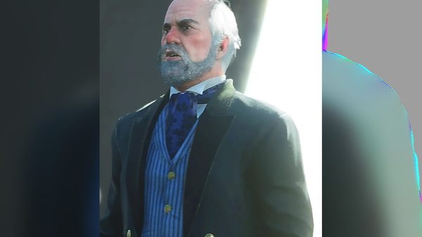
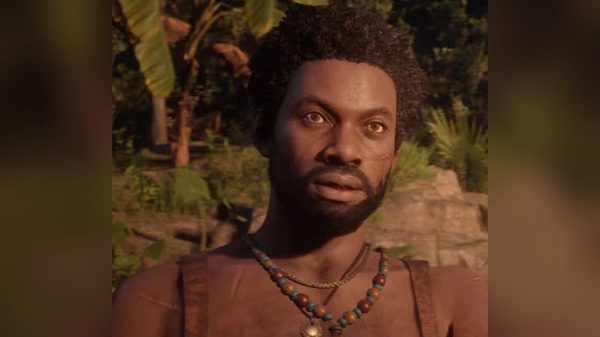
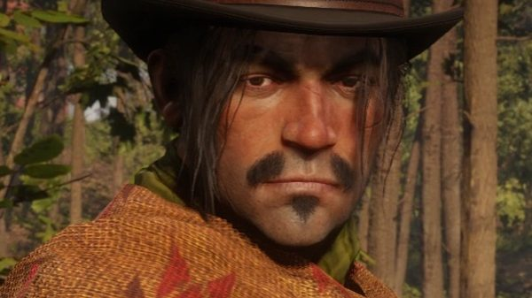
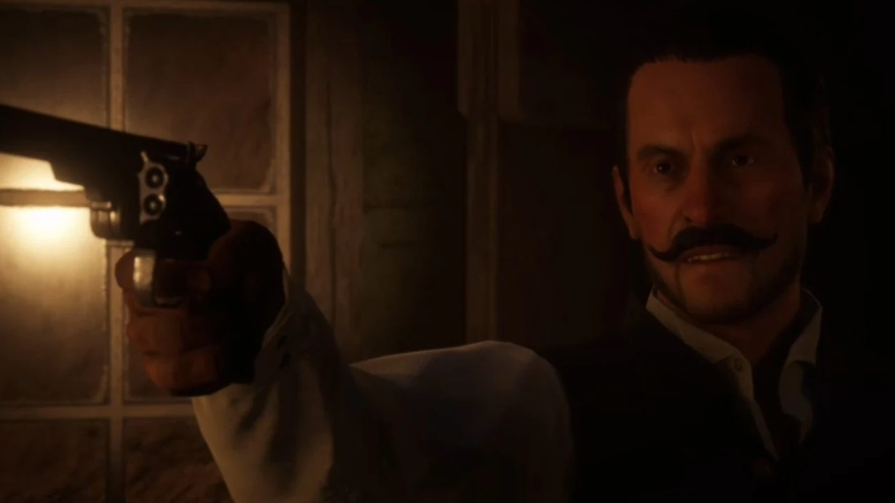

Character · Guarma
Alberto Fussar
Alberto Fussar is the governor of Guarma, a Caribbean island, in Red Dead Redemption 2. He holds the rank of colonel and runs the island's sugar industry.
He is the main antagonist of chapter 5, when the Van der Linde gang is shipwrecked on Guarma.
- Role
- Governor of Guarma
- Rank
- Colonel
- Based at
- Aguasdulces
- Status
- Killed in 1899
- Games
- Red Dead Redemption 2
Biography
Governor of Guarma
Fussar runs the sugar plantation and refinery at Aguasdulces. An in-game newspaper describes his rule over the island as quasi-military. His plantation overseer is an American, Levi Simon.
He does business with Leviticus Cornwall. The newspaper article "Guarma Island Sugar Boom" reports that Cornwall has signed an exclusive purchase order with the governor of Guarma, whom he calls "a great friend of America".
Fussar also appears as a guest at Mayor Lemieux's party in Saint Denis, in "The Gilded Cage".
The gang on Guarma
After the Saint Denis bank robbery, Dutch, Arthur, Micah, Bill and Javier escape on a steamer, the Antenor. It sinks in a storm, and they wash up on Guarma. Levi Simon's men put them in chains.
In "A Kind and Benevolent Despot", Dutch and Arthur find Fussar and his soldiers mocking Javier while a donkey drags him through the dirt. They set fire to the refinery and free Javier. In "Hell Hath No Fury", Fussar calls in a warship from Cuba. Arthur sinks it with a cannon at the fort of Cinco Torres.
Death
In "Paradise Mercifully Departed", the gang and the island's rebels attack Aguasdulces. In a cabin, Arthur, Dutch, Levi Simon and Fussar end up in a standoff. A captive ship captain shoots Simon dead, and Fussar escapes through a window.
Fussar takes position with an artillery piece on a tower above the port. Arthur fires a second cannon at the tower and kills him, in 1899. An in-game newspaper later reports the assassination of the governor of Guarma, and the involvement of "several white men".
Relationships

Leviticus Cornwall
Buys Guarma's sugar under an exclusive contract.

Hercule Fontaine
Leads the rebels fighting his regime.

Dutch van der Linde
Joins the rebels against him to get off the island.

Javier Escuella
Held prisoner by his men, then freed by Dutch and Arthur.

Arthur Morgan
Kills him with a cannon shot at Aguasdulces.
Behind the scenes
Alberto Fussar is played by Alfredo Narciso. He appears only in Red Dead Redemption 2.
Gallery
